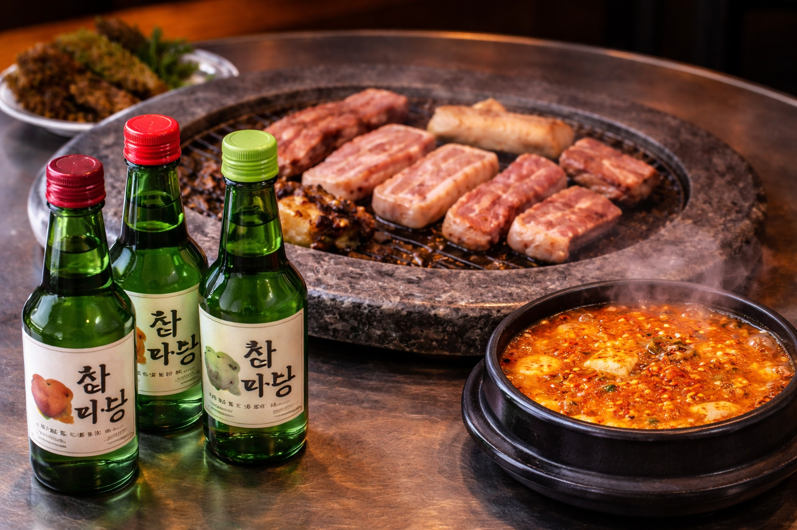
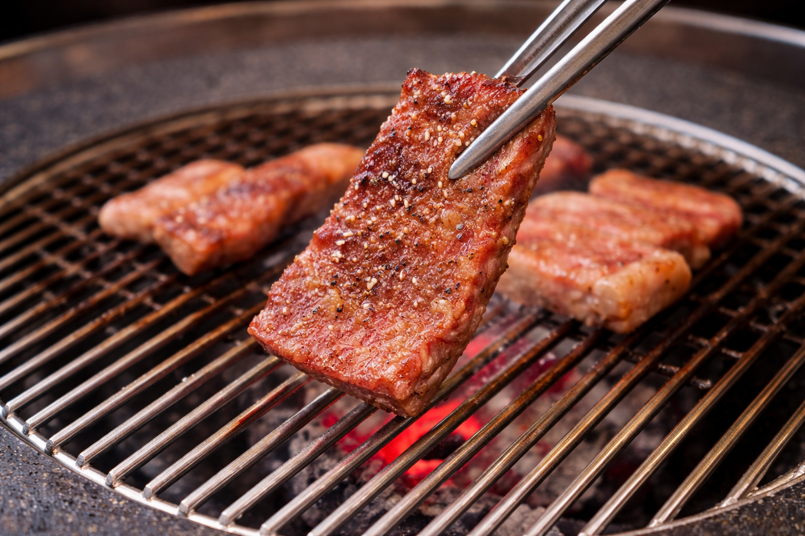
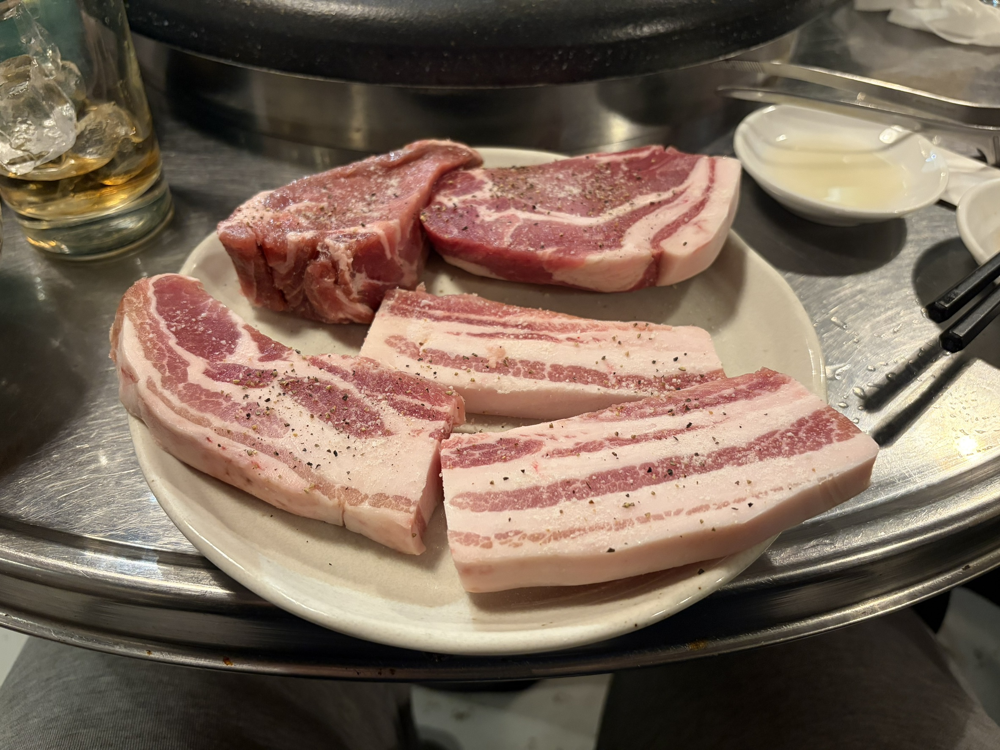

炭火で焼き上げることで生まれる、外側の香ばしさと内側のやわらかさ。遠赤外線が肉の奥までゆっくり火を通し、一口ごとに広がる深い旨みを引き出す。

サムギョプサルは、豚バラ肉の厚みと脂のバランスが魅力。炭火でじっくり焼くことで余分な脂が落ち、香ばしさとジューシーさを同時に引き出す。外側はカリッと、中はふっくらとした食感に仕上がるのが特徴。
厳選した素材を使用した特製キムチをベースに、旨み・辛み・酸味のバランスを丁寧に調整。コクのある味わいで、料理全体を引き立てる。
黒毛和牛カルビやロース、タン、ホルモンなど、種類豊富なメニューを取り揃え。部位ごとの異なる食感や旨みを楽しめるのが魅力。